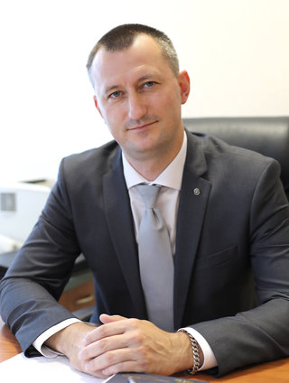

| 2020 |
Квартира выставлялась на продажу
Цена продажи при выставлении объявления: 93.900 $ Квартиру продавали: ТПН "Этажи" (+375-44-451-19-95) |
| 2020 |
Продажа квартиры (или смена собственника)
Новый собственник: Андрончик Иван Максимович Бывший собственник: Косовец Василий Александрович (+375-29-611-51-01) Квартиру продавали: ТПН "Этажи" (+375-44-451-19-95); АН "Этажи", Пётр (+375-44-586-74-52); АН "Академ-Недвижимость" (+375-29-667-33-37) Цена продажи при выставлении объявления: 104.000 $ Последняя цена в объявлении: 93.900 $ |
| 2019 |
Первый собственник
 Косовец Василий Александрович (+375-29-611-51-01, родился в 1982 году в Минске). В 2005 году окончил БНТУ (промышленное и гражданское строительство), в 2016-м — Академию управления при Президенте Республики Беларусь (государственное и местное управление). С 2005 по 2014 годы работал в ОАО «МАПИД» прорабом, начальником участка, заместителем начальника управления, главным инженером—первым заместителем начальника СУ-101. С 2014 по 2019 годы — заместитель главы администрации Первомайского района столицы. С 26.08.2019 г. назначен на должность заместителя генерального директора ГПО «Минскстрой» (выполнение функций заказчика по строительству). © minskstroy.by |